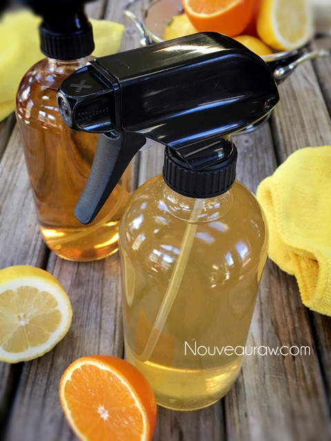
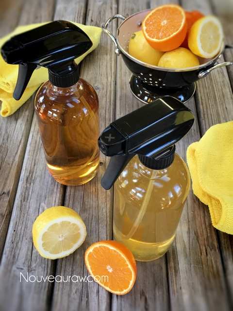

Citrus Household Cleaner
 One of the staples in our kitchen is lemons. Once a week, I juice 2 lbs of lemons. My husband loves fresh squeezed lemonade. So, I keep a jar of fresh lemon juice in the fridge, and throughout the week I combine some juice, water, ice, and a sweetener to a mason jar. I put the lid on and shake! That’s it. It’s so refreshing, and it puts a smile on his face.
One of the staples in our kitchen is lemons. Once a week, I juice 2 lbs of lemons. My husband loves fresh squeezed lemonade. So, I keep a jar of fresh lemon juice in the fridge, and throughout the week I combine some juice, water, ice, and a sweetener to a mason jar. I put the lid on and shake! That’s it. It’s so refreshing, and it puts a smile on his face.
Anyway, this always leaves me with a pile of lemon peels. I use them to scrub my sinks, boil them to add a pleasant scent into the air but often I just have too many to deal with. Sometimes I even freeze the peels until I have enough to make a batch or two of cleanser.
Homemade Cleaner
When you allow the citrus peels to sit in the vinegar for a few weeks, it infuses the vinegar with the oils and scents of the peel. These oils in the citrus not only provide a great scent, but they also provide a bit of extra cleaning power. This is due to D-limonene which is a powerful solvent for dirt and especially grease.
Scent Ideas
Cinnamon Orange: Add cinnamon sticks, star anise, whole cloves, almond extract, and orange peels. Lemon Lavender: lemon peels and lavender buds. Lemon Rosemary: lemon peels, rosemary sprigs, and vanilla extract. Lime Thyme: lime peels and sprigs of thyme. Grapefruit Mint: grapefruit peels and mint sprigs. The combinations keep ongoing. Be creative!
The smell of vinegar
If you still find the smell of vinegar too strong, keep in mind that the vinegar scent will fade once the cleaner dries. You can also add a few drops of citrus essential oils to the solution to improve the scent. Add either 1/2 to 1 teaspoon of extract or 4-5 drops of essential oil.
Caution
These citrus vinegar cleaners are considered all-purpose except for use on granite, marble, and wooden floors. Vinegar is acidic and can mar the finish of porous stone countertops. This acid could also eat the finish off of wooden floors. These cleaners can be used for almost everything else but if you are ever in question, always do a small test spot that is hidden.
Let’s talk Towels
For years I have been using Kirkland Signature Ultra High Pile Premium Microfiber Towels (36-Pack). They are over-sized, 16×16″ which is a great size. I am not sponsored by them, just love them! I purchase them at Costco for $15.99. They absorb liquid really really well for dish drying, cleaning, etc. They work like magic without scratching, linting, or streaking. And since I am always in the kitchen creating recipes, I go through a LOT of towels in one day. Lol, And once they start to wear out, I take a magic marker and put an “X” on the corner of the rag. This then becomes a shop rag. I hope this post inspired you. Many blessings, amie sue
- Citrus peels
- white vinegar
- mason jar with lid
- Possible herbs or spices
Preparation:
- Fill a glass jar with clean chopped citrus peels.
- There is considerable wiggle room in how much citrus peel you add to the vinegar. I fill my jars 3/4 ways full of peels, then add the vinegar.
- Pour vinegar over the peels until they are completely submerged and screw the lid on the jar.
- Add any herbs or spice combinations as listed above if desired.
- Allow the concoction to sit, occasionally shaking the jar to mix the liquid.
- After 10-14 days, strain out the peels by dumping them into a mesh strainer, catching the liquid in another bowl.
- They are ready when the vinegar has a strong citrus odor and is yellowish or orangish in color.
- Compost the peels, don’t reuse them for another batch.
- Transfer the cleaning liquid to spray bottles and have fun cleaning! Yep, FUN!
- I used these glass bottles, which I love.
- Dilute with water if you so desire. The concentration depends on your intended use and preference. I used a 1:1 ratio.
- Multi-use:
- Wood… To use for dusting wood furniture, mist the cloth, then clean.
- Wooden Floors… Be very careful with orange/citrus with wood floors; it will “eat” away at the poly finish.
- Stainless steel appliances… It cuts grease and cleans up grime.
- Glass… Use on mirrors or glass. To prevent streaking and a build of film, add a few drops of liquid dish detergent to the spray bottle.
- Granite… DON’T USE.
- Shelf-life – should last darn near indefinitely since vinegar is a preservative. But apparently, I clean too much because I always need to make more. haha
My Philosophy of House cleaning…

I don’t do windows because … I love birds and don’t want one to run into a clean window and get hurt.
I don’t wax floors because … I am terrified a guest will slip and get hurt then I’ll feel terrible.
I don’t mind the dust bunnies because … They are very good company, I have named most of them, and they agree with everything I say.
I don’t disturb cobwebs because… I want every creature to have a home of their own.
I don’t Spring Clean because… I love all the seasons and don’t want the others to get jealous
I don’t pull weeds in the garden because… I don’t want to get in God’s way; HE is an excellent designer!
I don’t put things away because… My husband will never be able to find them again.
I don’t do gourmet meals when I entertain because… I don’t want my guests to stress out over what to make when they invite me over for dinner.
I don’t iron because … I choose to believe them when they say “Permanent Press.”

© AmieSue.com